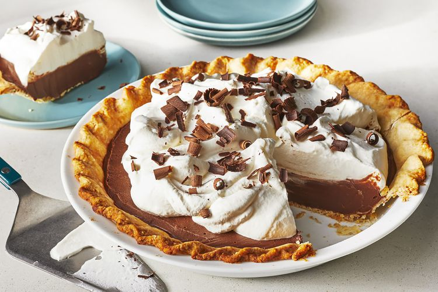

Home
Chocolate Custard Pie

Crispy, homemade crust filled with a decadent, rich chocolate filling and topped with billowy, sweetened whipped
cream!
Ingredients
Pie Crust
- 1 ½ cups all-purpose flour
- 1 tablespoon white sugar
- ½ teaspoon salt
- 6 tablespoons cold unsalted butter, cubed
- 3 tablespoons cold shortening, cut into chunks
- 4 tablespoons ice water, or more as needed
Pie Filling
- ¾ cup white sugar
- ¼ cup all-purpose flour
- ¼ cup unsweetened cocoa powder
- ¼ teaspoon salt
- 1 cup heavy whipping cream
- 1 cup whole milk
- 4 large egg yolks
- 1 (4 ounce) bar semisweet chocolate, finely chopped
- 2 ounces bittersweet chocolate, finely chopped
- 2 tablespoons unsalted butter
- 2 teaspoons vanilla extract
Whipped Cream Topping
- 2 cups heavy whipping cream
- 2 teaspoons vanilla extract
- 3 tablespoons white sugar
Steps
- Prepare crust: Pulse flour, sugar, and salt in a food processor 3 to 4 times or until combined. Add butter
and shortening and pulse 10 to 12 times or until mixture resembles coarse meal. Drizzle 4 tablespoons ice
water over mixture; pulse 5 to 6 times or until dough clumps together, adding up to 1 tablespoon water, 1
teaspoon at a time, if necessary. Gently shape dough into a flat disk. Wrap in plastic wrap, and chill for
30 minutes.
- Preheat the oven to 400 degrees F (200 degrees C).
- Roll dough into a 12-inch circle (about 1/8 inch thick) on a floured surface. Fit into a 9-inch pie plate;
turn edges under and crimp. Prick the bottom and sides with a fork. Line pastry with parchment paper, and
fill with pie weights or dried beans.
- Bake in the preheated oven for 12 minutes. Remove pie weights and parchment paper and continue to bake until
lightly browned and crisp, 10 to 12 minutes more. Transfer to a wire rack and cool while preparing filling.
- Prepare filling: Whisk together sugar, flour, cocoa powder, and salt in a large saucepan. Whisk together
heavy cream, milk, and egg yolks in a medium bowl until completely blended. Gradually whisk egg mixture into
sugar mixture.
- Cook over medium heat, whisking constantly, just until mixture begins to boil, 6 to 8 minutes. Cook for 1
more minute, whisking constantly. Remove from heat and whisk in semisweet chocolate, bittersweet chocolate,
butter, and vanilla until chocolate and butter have melted and mixture is completely smooth.
- Spread filling in the cooled crust. Place plastic wrap directly on the warm filling and chill in the
refrigerator until set, 8 to 24 hours.
- Prepare topping: Beat heavy cream and vanilla at medium-high speed with an electric mixer until foamy.
Gradually add 3 tablespoons sugar, beating until soft peaks form.
- Just before serving, top pie with whipped cream.